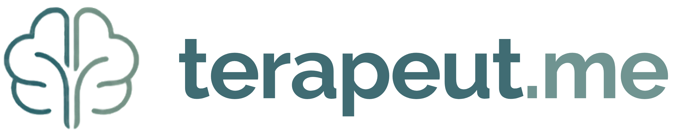
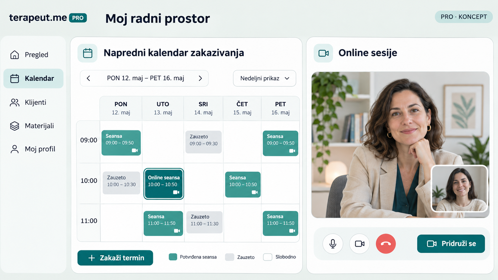
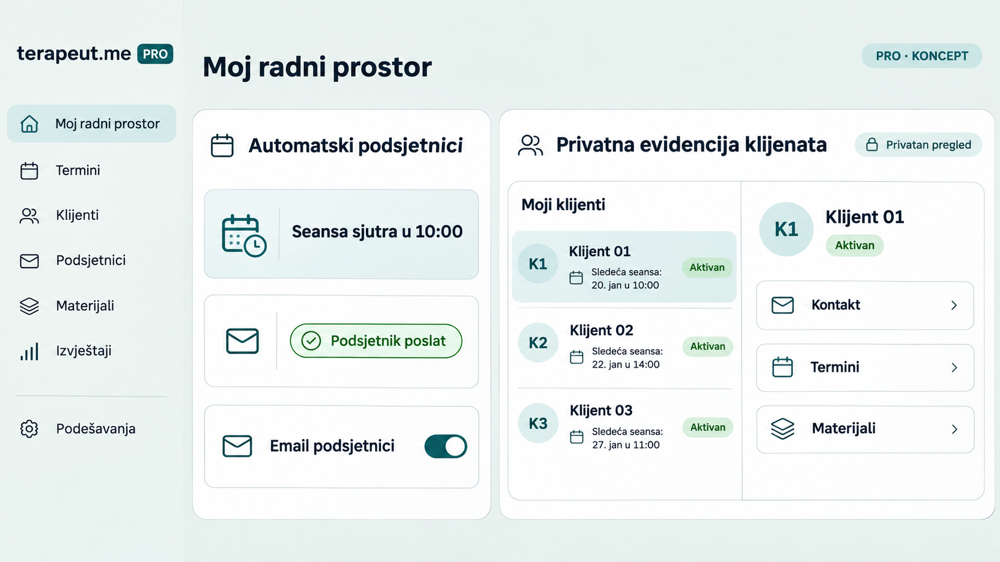
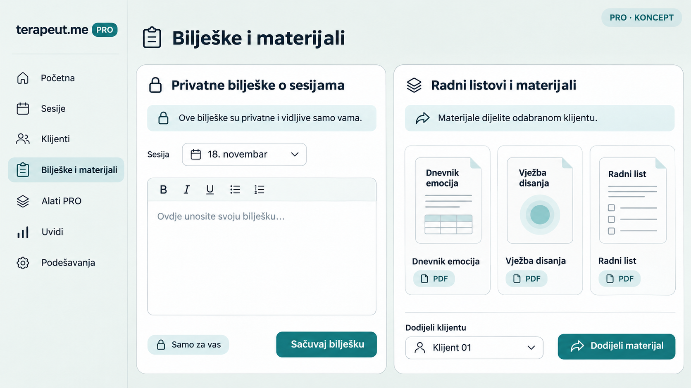
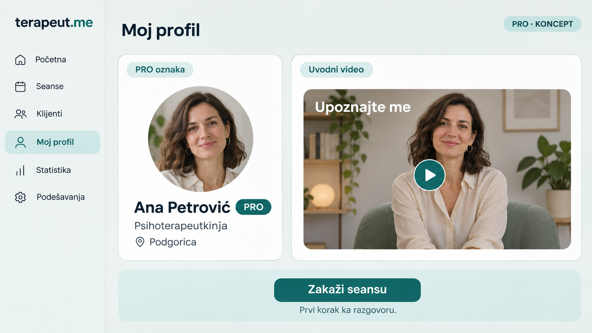
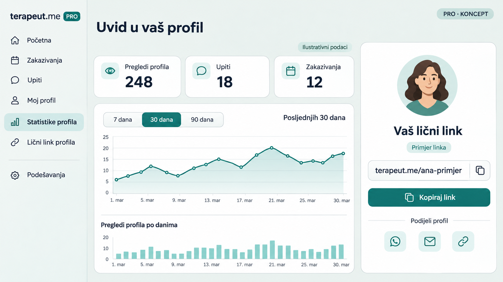
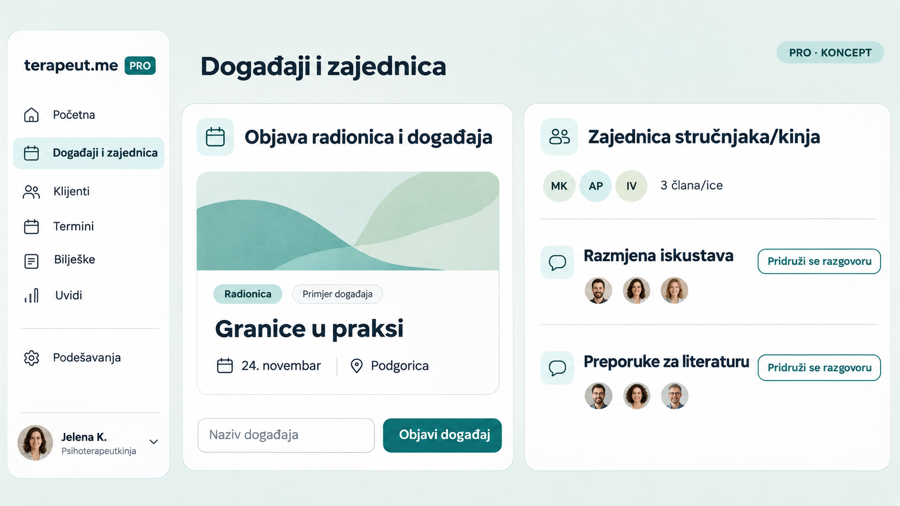

Online sesije
Napredni kalendar zakazivanja

USKORO · PROZA STRUČNJAKINJE I STRUČNJAKE
Ojačajte svoju praksu i prenesite je online
u mjeri u kojoj
vama odgovara.
Sve što vam treba za rad, na jednom mjestu.
Napredni kalendar zakazivanja
Privatna evidencija klijenata
Radni listovi i materijali
Uvodni video na profilu
Lični link profila
Zajednica stručnjaka/kinja
Od slobodnog termina do razgovora, u jednom toku.
Razgovor na daljinu, povezan sa terminom i vašim profilom.
Jasan pregled dostupnosti, zakazivanja i narednih seansi.

Podsjetnici i evidencija uz svakodnevni rad.
Podsjećanje na predstojeći termin, bez ručnog slanja svake poruke.
Organizovan pregled klijenata, kontakata i povezanih termina.

Bilješke za vas. Materijali koje dijelite sa klijentom.
Mjesto za vaše bilješke uz seansu, odvojeno od sadržaja koji dijelite.
Radni listovi, vježbe i preporuke za konkretnog klijenta.

Više prostora da klijent upozna vaš način rada.
Prepoznatljiva oznaka korišćenja PRO alata na javnom profilu.
Kratko video predstavljanje vašeg pristupa i načina rada.

Razumijte posjete profilu i olakšajte njegovo dijeljenje.
Pregled posjeta profilu, upita i zakazivanja kroz vrijeme.
Jedna adresa profila za dijeljenje na mrežama, u emailu i potpisu.

Radionice, događaji i zajednica na jednom mjestu.
Prostor da predstavite radionicu ili događaj i osnovne informacije.
Mjesto za profesionalno povezivanje, pitanja i razmjenu resursa.

Organizacija, kontinuitet i povezivanje
u prostoru koji prati vaš
rad.
Koncept PRO alata. Funkcije i izgled mogu se mijenjati.
terapeut.me · @terapeut.me